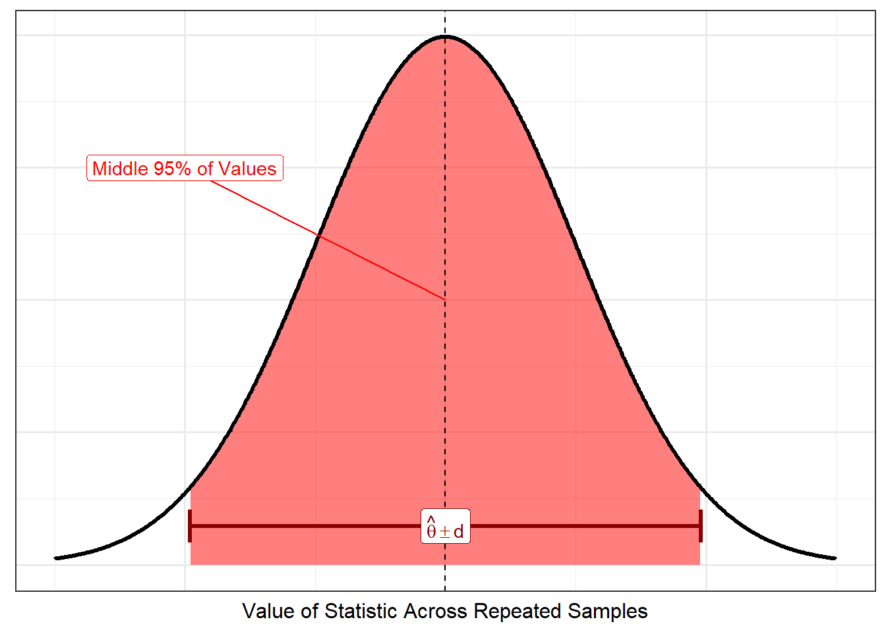

4 Inference for a Population Mean
In the previous chapter, we examined properties of sampling distribution, with particular attention paid to the sampling distribution of the sample mean. We also discussed both analytical and empirical methods for modeling the sampling distribution of a statistic. In this chapter, we build on those results to conduct inference on a parameter.
4.1 Confidence Intervals
Sampling distributions characterize the variability in a statistic across repeated samples. That is, we expect the statistic to differ from one sample to another. However, what the sampling distribution reveals is that the degree to which these statistics vary, and the degree to which they vary from the corresponding parameter, is quantifiable. This is how sampling distributions are used in a probability course — given an underlying population, determine the probability that the sample mean exceeds a particular value. In statistics, however, we want to go in the other direction — given a set of data, determine a suitable interval of estimates for the parameter.
Figure 4.1 accompanies the “forward” direction that would accompany a probability problem. Given the sampling distribution, we would be 95% sure the statistic would fall within \(d\) units of the parameter \(\theta\), as illustrated by the shaded region.
Given a sample, we want to “reverse engineer” the problem. That is, the sampling distribution tells us that the statistic would likely not fall more than \(d\) units from the parameter. Therefore, if we take a sample from the underlying population and compute a statistic, we would expect the parameter to be within \(d\) units of this statistic. This is illustrated in Figure 4.2, where the difference is that the model for the sampling distribution is centered on the statistic. We call this a confidence interval.

Definition 4.1 (Confidence Interval) Consider repeatedly taking samples \(\mathbf{Y}\) of size \(n\) from a population characterized by the parameter \(\theta\). The interval \(\left(h_1(\mathbf{Y}), h_2(\mathbf{Y})\right)\) is said to be a \(100c\)% confidence interval if
\[Pr\left(h_1(\mathbf{Y}) \leq \theta \leq h_2(\mathbf{Y})\right) = c.\]
Warning
It is important to note that in the definition of a confidence interval, the statistics \(h_1(\mathbf{Y})\) and \(h_2(\mathbf{Y})\) are the random variables; the parameter \(\theta\) is fixed. That is, it is the interval that is moving across the repeated samples, not the parameter. Instead of saying “the probability the parameter is within the interval,” we would say “the probability the interval captures the parameter.” While this may seem subtle, it is important for correctly interpreting the interval.
Notice that in the definition of a confidence interval depends on repeated sampling. Once we have a sample, probability no longer makes sense; the interval either captures the parameter or it does not, but our ignorance of the result does not warrant a probability statement. This is a direct result of our interpretation of probability (Definition 1.5).
Example 4.1 (CI for Sample Mean Using CLT) Let \(Y_1, Y_2, \dotsc, Y_n\) be a large random sample from a population with a finite mean \(\mu\) and variance \(\sigma^2\). Develop a \(100c\)% confidence interval for the population mean \(\mu\).
Solution. Define \(z_{0.5(1 + c)}\) to be the value such that
\[Pr\left(Z \leq z_{0.5(1+c)}\right) = 0.5(1 + c)\]
for any \(0 < c < 1\) where \(Z \sim N(0, 1)\). Then, we know that
\[c = Pr\left(-z_{0.5(1+c)} \leq Z \leq z_{0.5(1+c)}\right)\]
because of the symmetry of the Normal distribution. Defining \(\bar{Y}\) and \(S\) to be the sample mean and standard deviation from the sample, from the CLT, we know that the ratio \(\frac{\sqrt{n}\left(\bar{Y} - \mu\right)}{S}\) can be approximated by a Standard Normal distribution. That is, probability statements about this ratio are equivalent to probability statements about a Standard Normal random variable. Therefore, we have
\[c = Pr\left(-z_{0.5(1+c)} \leq \frac{\sqrt{n}\left(\bar{Y} - \mu\right)}{S} \leq z_{0.5(1+c)}\right).\]
We now rearranging terms, we have
\[ \begin{aligned} c &= Pr\left(-z_{0.5(1+c)} \leq \frac{\sqrt{n}\left(\bar{Y} - \mu\right)}{S} \leq z_{0.5(1+c)}\right) \\ &= Pr\left(-z_{0.5(1+c)}\frac{S}{\sqrt{n}} \leq \left(\bar{Y} - \mu\right) \leq z_{0.5(1+c)}\frac{S}{\sqrt{n}}\right) \\ &= Pr\left(\bar{Y} - z_{0.5(1+c)} \frac{S}{\sqrt{n}} \leq \mu \leq \bar{Y} + z_{0.5(1+c)} \frac{S}{\sqrt{n}}\right). \end{aligned} \]
Defining \(h_1(\mathbf{Y}) = \bar{Y} - z_{0.5(1+c)}\frac{S}{\sqrt{n}}\) and \(h_2(\mathbf{Y}) = \bar{Y} + z_{0.5(1+c)}\frac{S}{\sqrt{n}}\), we have identified an interval \(\left(h_1(\mathbf{Y}), h_2(\mathbf{Y})\right)\) that satisfies the definition of a \(100c\)% confidence interval.
Consider the following research objective:
Estimate the average cost (in US dollars) of a diamond for sale in the United States.
In the previous chapter, we saw that the CLT could be used to model the sampling distribution of the sample mean using the available data. Applying the result of Example 4.1, we have that a 95% confidence interval for the average cost of a diamond is given by
\[ \begin{aligned} \bar{y} &\pm z_{0.925} \left(s / \sqrt{n}\right) \\ 3932.8 &\pm (1.96) (3989.4 / \sqrt{53940}) \\ (3899&,\ 3966). \end{aligned} \]
While Example 4.1 provided a formula for a confidence interval using the CLT, we can also develop a confidence interval in the same spirit from an empirical model. Simply define \(h_1(\mathbf{Y})\) and \(h_2(\mathbf{Y})\) to be the 2.5-th and 97.5-th percentiles from the empirical sampling distribution. Then, we will have a valid 95% confidence interval. ?fig-inference-bootstrap illustrates the 95% CI using the same data.
Not surprisingly, since we saw in the last chapter that the empirical model and the CLT were extremely similar, the 95% CI from the empirical model matches the 95% CI given by the CLT.
4.2 Null Distributions and P-Values
The disciplines of probability and statistics blend together most naturally when performing a hypothesis test. In Chapter 3, we examined sampling distributions of a statistic, with particular attention paid to the sample mean. We had to transition to modeling these sampling distributions using data since the population parameters, which also characterize the sampling distribution of the statistic, are unknown. When we are performing a hypothesis test, however, the null distribution specifies a particular value of the unknown parameter(s); this then allows us to make use of our models directly! This is known as a null distribution.
Definition 4.2 (Null Distribution) Distribution of a statistic under a hypothesized value of the population parameter(s).
Let’s return to our investigation of diamond prices. Suppose we are interested in the following research question:
Is it reasonable that the average cost (in US dollars) of a diamond is $3900? Or, does the sample provide evidence that the average cost of a diamond exceeds $3900?
Letting \(\theta\) represent the average cost (in US dollars) of a diamond, the above research question can be captured using the following hypotheses:
\[H_0: \theta \leq 3900 \qquad \text{vs.} \qquad H_1: \theta > 3900.\]
From the CLT, we have that the sampling distribution of the ratio
\[\frac{\sqrt{n}\left(\bar{Y} - \theta\right)}{S}\]
can be approximated by a Standard Normal distribution, where \(\bar{Y}\) and \(S\) represent the sample mean and standard deviation, respectively. In the above ratio, \(\theta\) is unknown. However, if we are willing to assume the above null hypothesis is true, then we know that \(\theta = 3900\).
Note
When working with a one-sided hypothesis, “assuming the null hypothesis” always considers the boundary of the interval. The idea here is that if we can establish evidence against this boundary, then we can establish evidence against any other value represented in the null hypothesis.
That is, if the null hypothesis is true, then we have that the sampling distribution of the ratio
\[\frac{\sqrt{n}\left(\bar{Y} - 3900\right)}{S}\]
can be approximated by a Standard Normal distribution. Essentially, we are using the CLT combined with the knowledge provided by the null hypothesis about the parameters. That is, we really are discussing the null distribution. Now, we can use this distribution to make probabilistic statements. For example, we might ask the following question:
Assuming the null hypothesis is true, what is the probability that the ratio \(\frac{\sqrt{n}\left(\bar{Y} - 3900\right)}{S}\) would meet or exceed 1.909?
This is a straight-forward probability problem. Observe that
\[ \begin{aligned} Pr\left(\frac{\sqrt{n}\left(\bar{Y} - 3900\right)}{S} \geq 1.909\right) &= Pr(Z \geq 1.909) \\ &= 0.0281 \end{aligned} \]
where \(Z \sim N(0, 1)\). That is, assuming the mean cost of a diamond is $3900, there is only a 2.81% chance that we would observe a ratio of at least 1.909. However, using the data we obtained, we find that the ratio we observed in our sample was 1.909, where we use the observed sample mean and standard deviation in the computation. That is, if the average cost of a diamond is $3900, if we were to repeat the study, there is only a 2.81% chance that we would observe data that would provide a ratio as extreme or more so than that observed. Further, larger values of this ratio are more consistent with the alternative hypothesis (average costs larger than $3900). So, if the average cost of a diamond is $3900, there is only a 2.81% chance that we would observe data as consistent or more so with the alternative hypothesis as that observed. This is known as a p-value.
Definition 4.3 (P-value) The probability, assuming the null hypothesis is true, that we would observe a statistic, by chance alone, as extreme or more so than that observed in the sample.
Note
Often times, our analytic results imply a sampling distribution (or an approximation of the sampling distribution) for a ratio instead of the statistic of interest. This ratio is often called the “standardized (test) statistic” in hypothesis testing because the ratio, when evaluated with the observed data, provides a metric quantifying the difference between our expectations and our observations in the sample.